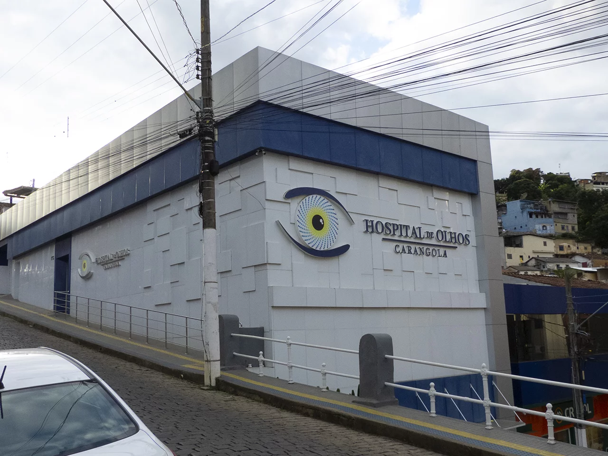

Hospital de Olhos de Carangola
O Hospital de Olhos de Carangola utiliza as mais modernas tecnologias, com equipamentos de última geração, além da dedicação e experiência de toda equipe envolvida. Somos reconhecidos como referência em microcirurgias oculares, tratamentos e transplantes no Noroeste Fluminense, Sul do Espírito Santo e Zona da Mata Mineira, oferecendo tratamentos personalizados e seguros.
